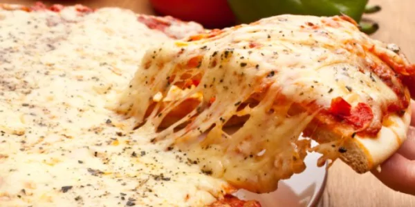

Italian Food
Italian food is also a very popular type of food, because of it’s quality, simplicity, health benefits, affordability, variety, and taste. The food is focused on fresh ingredients, which makes many different dishes simple, with things like pasta consisting of dough, tomatoes, spices, and basil. These ingredients are also quite healthy and cheap, alongside the great taste, which is why lots of people enjoy Italian food.
Fette Biscottate (Breakfast)
Photo of a few fette biscottate.[1]
A Fette Biscottate always finds it’s way onto the table in an Italian breakfast. It is a hard and dry biscuit that is largely produced around the world in packaging, but can also be made fresh. Usually, opinions on this food are very different, as many people find them stale and unappealing. A way to enjoy them is to top them with something sweet like nutella.
Caprese Salad (Lunch)

Photo of a caprese salad.[2]
Caprese salads are very popular in Italy. It is made with fresh tomatoes accompanied by mozzarella cheese that are then topped with pesto sauce. Usually some herbs are sprinkled on top, and the ideal way to eat it is with both of the contents at the same time, so the juicy tomatoes wrap around the mildness of the fat-free mozzarella cheese.
Margherita Pizza (Dinner)
Photo of a pizza.[3]
Pizza. Similar to a burger, pizza is also one of the most well known foods in the world. Created with tomato sauce and cheese topped on freshly baked dough, a pizza is a delicious food. The size of a pizza allows for it to be shared with others, and has made it’s way all across the globe.